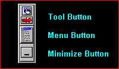

| My-T-Soft®: for Windows; Indestructible Keyboards and Indispensable Utilities; Version 1.80; User's Guide | ||
|---|---|---|
| Prev | Chapter 3. My-T-Soft Panels | Next |
My-T-Soft may be configured to operate in a Supervisor or Operator Mode, which changes the functionality of the Tool Bar. The Tool Bar may be covered or hidden under a Custom Logo. Consult My-T-Soft Setup, Special Handling and the Advanced User Information for Details.
The Tool Bar can also be closed, but this is intended as a developer / integrator function. From the Current Settings | Panels menu you may individually select panels to open and close. There is also a manual override, available in Panels. When this is enabled, a 3-click (1-2-3) click combination will toggle the panel - if opened, it will be closed - if closed, it will be opened. The original design created the Tool Bar as the one panel that can never be closed, and it is handled differently than the other selectable panels. Allowing it to close creates certain usability issues, and in certain cases the Control Panel will be modified to offer other options when the Tool Bar is closed. If the Tool Bar is closed, resizing and certain other actions will force the Tool Bar open.

The Tool Button opens and closes My-T-Soft Control Panel in the normal / Supervisor Mode. In Operator Mode, the Tool Button does not function.
The Menu Button pops up the My-T-Soft Menu. It allows you quick access to some of the frequently used options as well as the ability to run My-T-Soft Help. You may also save your current configuration & screen position from the My-T-Soft Menu . In Operator Mode, the Menu Button does not function.
The Minimize Button minimizes My-T-Soft to an icon or a button, based on your current configuration.
Important Note: Disabling the functionality and/or changing the appearance of the Tool Bar is possible (often used when in the Operator Mode). The Operator Mode is an Advanced Function. Consult My-T-Soft Setup, Special Handling and the Advanced User Information for Details.